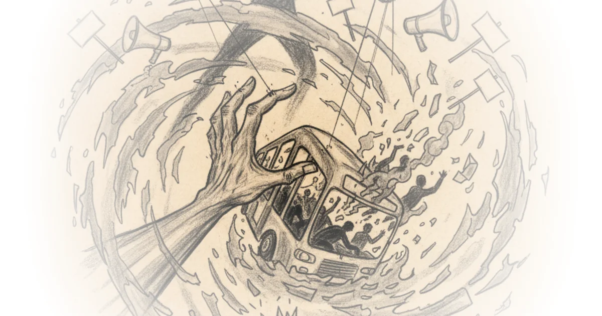

Mafia State Survival: Your Questions Answered Sarah Kendzior · Sarah Kendzior's Newsletter ·Aug 29, 2025 · 25 min read · Media
The Right's Rollercoaster to Hell Part III Peter Gelderloos · Surviving Leviathan ·Aug 20, 2025 · 28 min read · Philosophy
My Friend Leatherface Sarah Kendzior · Sarah Kendzior's Newsletter ·Aug 20, 2025 · 12 min read · Media
On Palestine Sarah Kendzior · Sarah Kendzior's Newsletter ·Aug 14, 2025 · 15 min read · Foreign Policy
Conversation with Harj Narulla: The ‘landmark’ climate case that could finally make big polluters… Various · Break-Down ·Aug 14, 2025 · 33 min read · Culture
The Shadows of Fergus Adrian Neibauer · Notes on the State of Education ·Aug 11, 2025 · 17 min read · Culture
Revolutions Are Built on Failure Margaret Killjoy · Birds Before the Storm ·Aug 1, 2025 · 11 min read · History
The Right's Rollercoaster to Hell Part II Peter Gelderloos · Surviving Leviathan ·Jul 29, 2025 · 28 min read · Philosophy
Yancey Strickler: Dark Forest Theory of the Internet Doom Scroll · Doom Scroll ·Jul 29, 2025 · 41 min read · Culture
How to Live Like the World is Ending Margaret Killjoy · Birds Before the Storm ·Jul 23, 2025 · 14 min read · Culture
Tim Heidecker: Irony, Comedy and the Internet Doom Scroll · Doom Scroll ·Jul 15, 2025 · 62 min read · Culture
This is Hollywood's Liberal Fantasy, and it's Falling Apart Tom van der Linden · Like Stories of Old ·Jun 28, 2025 · 27 min read · Culture
Big Law Firms: The Shadow Government Ruining America? More Perfect Union · More Perfect Union ·Jun 20, 2025 · 14 min read · Law & Rights
Labor Could Swing NYC’s Election to Zohran Eric Blanc · Labor Politics ·Jun 19, 2025 · 12 min read · Economics
The Ones Thrown Under the Bus Peter Gelderloos · Surviving Leviathan ·Jun 15, 2025 · 16 min read · Philosophy 
India’s Foreign Policy Falters Under the Weight of Nationalist Politics Rana Ayyub · ·Jun 9, 2025 · 10 min read
Why Young Men Don’t Like The Democrats More Perfect Union · More Perfect Union ·Jun 6, 2025 · 28 min read
Hasan Piker: Online Politics and the Left Doom Scroll · Doom Scroll ·Jun 5, 2025 · 58 min read · Media
Why gen-Z men are turning far right and women far left Joeri Schasfoort · Money & Macro ·May 29, 2025 · 13 min read · Culture
Deadly Double Standards Peter Gelderloos · Surviving Leviathan ·May 28, 2025 · 14 min read · Philosophy
Why Singapore Elects the Losers of its Elections PolyMatter · PolyMatter ·May 20, 2025 · 16 min read · Foreign Policy